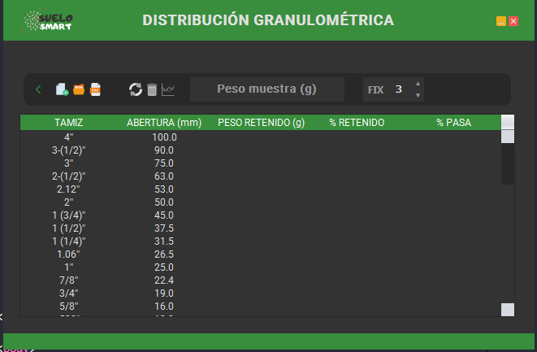
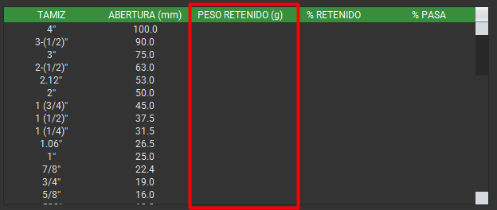

Esta vista permite realizar los cálculos de la distribución granulométrica de una muestra de suelo.
Imagen de la vista de distribución granulométrica:
En la distribución granulométrica, encontrará un formulario en el centro de la cinta de opciones para ingresar el peso de la muestra en (g). Este valor es fundamental para calcular los pesos retenidos por cada tamiz.
A continuación, se presenta una matriz con una serie de tamices.  El usuario deberá ingresar el peso retenido del tamiz al cual se le ha hecho la prueba. Al tener todos los pesos retenidos, el sistema calculará % retenido y % pasa. No es necesario ingresar un peso para cada número de tamiz; solo se deben ingresar en los tamices a los que se les ha hecho la prueba.